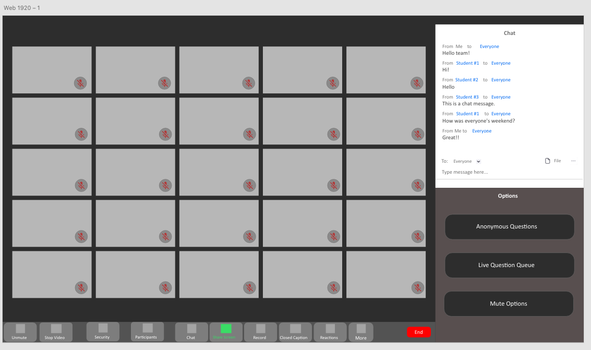

Milestone 4¶
Final Prototype Proposal for the Lightning Sharks Team Proposal. By Josh Weintraub, Eric Miller, Alec Oortman, Alexander Costa, and Daniel Grotch
Note: With approval from Dr. Cotterell, we removed the tiered point system from our project.
Research Question and Methodology¶
Research Question: How can we encourage participation from both online and remote students in a way that also prevents too many intervening at the same time that impedes effective discussion?
Methodology: Our methodology will be a mix of Observations and Experiments
Testing Procedure¶
1. Observations¶
We begin by viewing a series of hybrid-synchronous learning classes. We are looking for information about how often students interact with the professor and each-other. This will also be our Control Group for the sake of experimentation. This includes data such as:
How many students are remote vs. in person
How frequently are questions asked
Which students are asking the questions (remote vs. In-Person)
How long do they have their hand raised or wait on average for their question to be answered
How does the timing compare between questions asked in chat or by signaling the “hand raised” emoji in Zoom and which is faster?
How does this vary by professor, class size, or type of question?
Are these questions being asked primarily over voice or by chat?
2. Data Analysis¶
By collecting this information we can begin to create models of what our average hybrid-synchronous class looks like at UGA and the habits of students.
For example, if we find that students preferred to ask questions over voice instead of text, our priority would shift to improving the question-answering queue system. However, if we found that they preferred to have inquiries submitted by text, then our focus would move slightly to the anonymous question queue to better meet the trends of the students involved.
3. Informed Consent¶
To acquire informed consent we would verify with the professor that they were ok with us recording and viewing their class, sometimes in person and sometimes-remote. We would also collect consent waivers for all participants in the experiment.
4. Pandemic Safety¶
Since a lot of this will be conducted on Zoom, we will do mostly monitoring of Zoom classes. However, with the permission of the professor and space permitting, we would like to visit a few classes in-person to create a more well-rounded model of student behavior.
If visiting in person we will comply with all relevant safety procedures in conjunction with University Guidelines
5. Experimentation¶
- Ideally we would like to conduct two blind tests. One where we have participants act as the professor and one as the student.
Student - We would like them to ask a question to a fake zoom class while using one of the interfaces we create and decide for themselves which one fits the appropriate subject matter and context. These contexts could vary based on the location of the student (remote vs. in-person), the timeliness of the question, the subject matter, etc. This will better help us understand both the habits of the students, the easiness of the system’s use, and which area still needs work.
Professor - We would like to have either students roleplay as a professor or ask actual ones to test the system. We can do this by presenting the professor with a variety of questions asked in various ways offered by the new system. For example we would like to see their approach tackling the question-queue, if they prioritize live questions or text-based, and how long they take to do so. Understanding the timing and the ways professors interact with eager students is paramount to an understanding of how to best increase participation from those same students.
Final Prototypes¶
Note that we had a panel for the participation options for all students/instructors originally (which is included in some wireframes), but was removed once we decided to remove the point tier system. These do not appear in the mockups.
3.1: Instructor Settings¶
We chose option 3.1.a, where everything stays in the same panel instead of opening the settings window, so the instructor has easier access to enabling/disabling these common features. The buttons, when clicked, will simply be enable/disable buttons, so only one artboard was used. Also, this was moved to be under the chat for the same non-obstruction feature as before.
{kind=link}